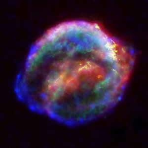
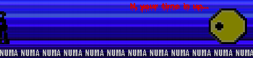
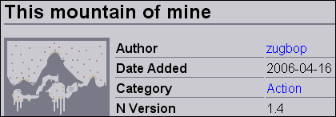

I've had that too. I'll see if it works for me yet.
I'm new, and I've wondered how you play demos. I've tried to on Ned (demo playback) and User levels, but it doesn't work. Please help me! 


Up arrow!
I suppose it's just because I play so many other games with that key as jump, and it is in the right place compared with the other keys.
I suppose it's just because I play so many other games with that key as jump, and it is in the right place compared with the other keys.
Here's my first submission: http://numa.notdot.net/map/29253
It's a version of my earlier map Landslide!
It's a version of my earlier map Landslide!
How do all of you well known mapmakers get well known?
I just can't get people to look at my maps, even though I try to make good tilesets.
Please reply
Thanks
Zugbop
P.S. Sorry if your name isn't on the title.
I just can't get people to look at my maps, even though I try to make good tilesets.
Please reply
Thanks
Zugbop
P.S. Sorry if your name isn't on the title.
Hey, thanks everyone! I'll try all your tips and see if I get noticed!
All you guys are amazing at making maps too!
Zugbop
All you guys are amazing at making maps too!
Zugbop
This map of mine has not got any ratings. I dont know why, as I think it stands out quite well. Here it is: Vines
Please rate and comment, as I want to see what you think.
Thanks
Zugbop
Please rate and comment, as I want to see what you think.
Thanks
Zugbop
So what exactly is the map rating thread? 
Zugbop
P.S. I don't think my signatures on here, please tell me if it is or not.
Zugbop
P.S. I don't think my signatures on here, please tell me if it is or not.
Oh yes. I knew that. 
Hey, teh dude
I know, I'm not stupid, like some people are.
I know, I'm not stupid, like some people are.
Hey, teh dude
I know, I'm not stupid, like some people are.
Oh, and no-ones answered my question.
I know, I'm not stupid, like some people are.
Oh, and no-ones answered my question.
rated ballistic rings, it was very fun.
need Playground rated 4 more times. I made this ages ago and I thought it would get more than 1 rating.
Thanks
Zugbop
need Playground rated 4 more times. I made this ages ago and I thought it would get more than 1 rating.
Thanks
Zugbop
rated electric wired drone 3/5.
It was quite fun, but didn't seem to have a sense of completedness to it.
need Deoxyribonucleic Acid (DNA) rated.
Zugbop
It was quite fun, but didn't seem to have a sense of completedness to it.
need Deoxyribonucleic Acid (DNA) rated.
Zugbop
Oooh!
Sorry Mr know-it-all. I didn't mean to double post. And I also know what the Map rating thread is.
Now stop annooying me.
Sorry Mr know-it-all. I didn't mean to double post. And I also know what the Map rating thread is.
Now stop annooying me.
rated switchy
need Asteroid belt rated 2 more times
need Asteroid belt rated 2 more times
I've got one word for that:
oh fuck.
hee hee
oh fuck.
hee hee
Hey everyone.
I had this idea which I think will make a great competition. Basically, you have to make a map that has at least one teleport in it. I am looking for people who use them in imaginative ways.
There will be two judges, one of them me (zugbop), and Hydron.
There are three categories to fulfil. These are:
Map quality (out of 30)
Use of teleporters (out of 30)
Total is out of 60.
Rules of the competition:
Any kind of map except N art and DDAs are allowed.
You are allowed to post previous maps.
A maximum of three entries per person.
The deadline for entries is 1st May 2006.
Good luck!
Zugbop
I had this idea which I think will make a great competition. Basically, you have to make a map that has at least one teleport in it. I am looking for people who use them in imaginative ways.
There will be two judges, one of them me (zugbop), and Hydron.
There are three categories to fulfil. These are:
Map quality (out of 30)
Use of teleporters (out of 30)
Total is out of 60.
Rules of the competition:
Any kind of map except N art and DDAs are allowed.
You are allowed to post previous maps.
A maximum of three entries per person.
The deadline for entries is 1st May 2006.
Good luck!
Zugbop
Umm...
I edited the post, so blame me.
On second thoughts, don't bother.
I edited the post, so blame me.
On second thoughts, don't bother.
Does anyone want to be the second judge?
PM me if you do.
Zugbop
PM me if you do.
Zugbop
Hi people
I was messing about on a level I found on Numa (Io's press, actually) when I found that I could shoot through walls. I edited the level a bit, and, hey presto, I could get N to go through walls. Iwant to know whether it has been discovered before or not, and whether it would be useful.
Just paste the map data and demo data into the little boxes (you know what I mean).
Map data:
Demo data:
Thanks
Zugbop
I was messing about on a level I found on Numa (Io's press, actually) when I found that I could shoot through walls. I edited the level a bit, and, hey presto, I could get N to go through walls. Iwant to know whether it has been discovered before or not, and whether it would be useful.
Just paste the map data and demo data into the little boxes (you know what I mean).
Map data:
00000000000N0000P00000000000000000N0000P00000000000000000N0000P00000000000000000N0000P00000000000000000N0000P00000000000000000N0000P00000000000000000N0000P00000000000000000N0000P00000000000000000N0000P00000000000000000N0000P00000000000000000N0000P00000000000000000N0000P00000000000000000N0000P00000000000000000N0000P00000000000000000N0000P00000000000000000N0000P00000000000000000N0000P00000000000000000N0000P00000000000000000N0000P00000000000000000N0000P00000000000000000N0000P00000000000000000N0000P00000000000000000N0000P00000000000000000N0000P00000000000000000N0000P00000000000000000N0000P00000000000000000N0000P00000000000000000N0000P00000000000000000N0000P00000000000000000N0000P00000000000000000N0000P000000|5^348,324!8^396,396,1!8^396,390,1!8^396,384,1!8^396,378,1!8^396,372,1!8^396,366,1!8^396,360,1!8^396,354,1!8^396,348,1!8^396,342,1!8^396,336,1!8^396,330,1!8^396,324,1!11^324,396,468,396!8^396,324,3!8^396,330,3!8^396,336,3!8^396,342,3!8^396,348,3!8^396,354,3!8^396,360,3!8^396,366,3!8^396,372,3!8^396,378,3!8^396,384,3!8^396,390,3!8^396,396,3!7^372,384,3!7^372,336,1!7^420,384,3!7^420,336,1!2^264,564,0,-1!2^276,564,0,-1!2^288,564,0,-1!2^300,564,0,-1!2^312,564,0,-1!2^336,564,0,-1!2^336,564,0,-1!2^324,564,0,-1!2^240,564,0,-1!2^252,564,0,-1
Demo data:
185:35791360|35791394|35791394|35791394|35791394|35791394|2236962|17895696|17895697|17895697|17895697|17895697|17895697|17895697|17895697|17895697|17895697|17895697|219222289|17895765|17895697|17895697|17895697|17895697|17895697|17895697|17
Thanks
Zugbop
A way we can PM other members on Numa, because not all have accouts on Metanet Forums. And make it so you have to put a comment when you rate, and vice versa (unless you've already rated). And make it so you can see who rated what on your maps.
Zugbop
Zugbop
So, would it be useful?
Sorry, mate. But do you still think it is a good idea?
Yeah. I'm entitled to a lot of things...I think...
And I'm going to change my sig soon anyway; I'm getting bored of it.
Oh yeah. And this competition. Anyone going to enter it?
And I'm going to change my sig soon anyway; I'm getting bored of it.
Oh yeah. And this competition. Anyone going to enter it?
Ok. I'm going to look like a complete n00b for asking this.
The problem is, I've made a sig on my computer, but I can't get it onto my sig on the forums.
Help. Please!
Thanks
Zugbop
The problem is, I've made a sig on my computer, but I can't get it onto my sig on the forums.
Help. Please!
Thanks
Zugbop
Ok, thanks people.
I did try and put it on another website so I could get it off there, but (as usual) it didn't work.
Again, thanks
Zugbop
I did try and put it on another website so I could get it off there, but (as usual) it didn't work.
Again, thanks
Zugbop
Please enter anyway. I've been waiting to judge one for ages.
Oh, and I've changed the deadline to 1st May.
Oh, and I've changed the deadline to 1st May.
Teleporters? judged.
Map quality: 15
Use of teleporters: 20
Total: 35/60.
Alright use of teleporters, but apart from that it wasn't amazingly fun.
Map quality: 15
Use of teleporters: 20
Total: 35/60.
Alright use of teleporters, but apart from that it wasn't amazingly fun.
Twerp, you are a twerp:
Look at the rules before entering!
I know it's not a DDA anyway, but you categorized it as that, so I'm not judging it.
Any kind of map except N art and DDAs are allowed
Look at the rules before entering!
I know it's not a DDA anyway, but you categorized it as that, so I'm not judging it.
How about Planet of the Apes. Or the Incredible Hulk. Do those apply to anyone? 
Yo momma's so fat that when she wears yellow in New York people across the street shout 'Taxi'.
Yo momma's so fat that she needs booster rockets on her own personal bus.
Yo momma's so fat that she needs booster rockets on her own personal bus.
Ok sTEFANo. Please could you make a sig for me? I would something stylish, perhaps swirling green, but I don't mind. And Zugbop in the bottom right corner in dark green maybe?
Thanks
Zugbop
Thanks
Zugbop
So. Do you like my sig? I haven't got PhotoShop, so I can't make good sigs. I made this on MS Paint and MS Photo Editor. If anyone could make me one in a green swirly sort of stylish thing, that would be great.
Thanks
Zugbop
Thanks
Zugbop
I was going to do all of those things except shorten it. However, I can't make the text size bigger in paint. If anyone can help, please tell me.
Oh, what a noob I am... Oh yeah. Hi people. Just wondering, where can I find high-scores?
Nothing much else to say...
Thanks.
Nothing much else to say...
Thanks.
Oh. I'm always like this.  Thanks anyway.
Thanks anyway.
Thanks anyway.Ok. Here you go freakykiwi.
And McP, it's quite hard to make it shorter, because the middle is irregular. But hey.
And McP, it's quite hard to make it shorter, because the middle is irregular. But hey.
I've decided to do simple sigs for people who want them. They'll probably be in a similar style to mine. Just ask what colour and stuff you want on it, and I'll try and make one like you asked. Simple. Almost.
EDIT: I'm also going to make sort of straight line sigs (see orcsfromlotr's sig somewhere below).
Zugbop
EDIT: I'm also going to make sort of straight line sigs (see orcsfromlotr's sig somewhere below).
Zugbop
Here you go...

Hope you like it.
Hope you like it.
Sorry. I saw the post at the top, so I answered it.
Please can I have something dark red and orange, with Zugbop written at the side.
Thanks!
Thanks!
Do you want one anyway? I'll soon be posting a free sig for anyone who wants it. You just have to put your name on it.
Ok SHDOO:

Hope you like it. I'll have an avatar for you soon, xdude.
Hope you like it. I'll have an avatar for you soon, xdude.
Ok xdude. Choose out of either of these. The second is made from your sig.


This probably isn't what you were thinking of, but it is the best I can come up with. Sorry.

I took this a while back. It's a supernova. Well, just after the supernova.
[OFFTOPIC] Do you like my new sig and avatar? [/OFFTOPIC]

[OFFTOPIC] Do you like my new sig and avatar? [/OFFTOPIC]
Free sig up for grabs! First person who asks I will put their name on it.

Here's the sig xdude:

And an avatar to match:

And an avatar to match:
your other ones are pretty sick
Er...that's a good thing, right?
Oh, here's your sig, orcsfromlotr:

Thanks, then!
Here's your avatar:

Here's your avatar:
Here's your sig, greenpencil:

Go to My Controls at the top, click on Edit Signature, and click the image button. Then just put in this URL:
http://img136.imageshack.us/img136/858/greenpencilsig6xx.png
Hope that answers your question . I had this trouble once. To host images, use something like ImageShack. Then you can put them on the forums by using the URLs.
http://img136.imageshack.us/img136/858/greenpencilsig6xx.png
Hope that answers your question
. I had this trouble once. To host images, use something like ImageShack. Then you can put them on the forums by using the URLs.Ok, is this better?
^Most likely to become a loaded potato^ 


I will now also be doing line sigs like orcsfromlotr has got.
^Most likely to not know where I live^ 
Firstly, what country are you from, 'cos I'm rubbish at guessing.
Firstly, what country are you from, 'cos I'm rubbish at guessing.
I'm not being rude in the title, but if anyone has a better idea for the name, please tell me.
Ok, onto the main thingy. I've been thinking, and I've come up with away to combat snipers. I want to form a society (or something) which basically rates maps which have been sniped up. This will have to include many people, otherwise it won't work. The people will be given all fives, until the map reaches its deserved rating. This mght make sniping pointless for snipers so they will stop.
This mght make sniping pointless for snipers so they will stop.
We should use this thread as a communication board to tell each other what maps have been sniped. NOTE: Only maps with public ratings can get rated up. If you think a map proposed to be rated up does not desrve to be, contact the rest of the group on this thread.
Please PM me to join.
Thanks!
Odblob
Ok, onto the main thingy. I've been thinking, and I've come up with away to combat snipers. I want to form a society (or something) which basically rates maps which have been sniped up. This will have to include many people, otherwise it won't work. The people will be given all fives, until the map reaches its deserved rating.
This mght make sniping pointless for snipers so they will stop.We should use this thread as a communication board to tell each other what maps have been sniped. NOTE: Only maps with public ratings can get rated up. If you think a map proposed to be rated up does not desrve to be, contact the rest of the group on this thread.
Please PM me to join.
Thanks!
Odblob
Yes, but snipers aren't expressing their opinions, they are trying to make people unhappy, etc. by lowering votes. You don't like snipers, do you?
^8/10. Nice green, bubbly effect.
Here you go NUMA NUMA:
I know it's not exactly what you said, but I hope it's still alright.
I'll make the rest of them soon.

I know it's not exactly what you said, but I hope it's still alright.
I'll make the rest of them soon.
And ZZ9:

I like this one.
I like this one.
I'm not sure if I've got the freakin' deadly bit here, but hey.

Enjoy!
Enjoy!
And yours, abcdman2:

Sorry McP, but it's only made from your current sig.
EDIT: I've added a border.

EDIT: I've added a border.
Viper's sig:

And avatar:

And avatar:
Or...you could paste this as a picture into your sig:
http://img53.imageshack.us/img53/6038/explodd9sp.png
http://img53.imageshack.us/img53/6038/explodd9sp.png
Another one for you, SW. I still think that I haven't got it just right, but I'm only using a very simple picture program. Hope you like it anyway.

Oh, and this time, save the sig, and host it on something like ImageShack. Then put the URL into the sig.
Oh, and this time, save the sig, and host it on something like ImageShack. Then put the URL into the sig.
Greenpencil's avatar:

Sgt. Poptarts, your sig is ready! But the writing is a tad hard to read.

And your avatar:

And your avatar:
In this competition, you have to take a Metanet level, and turn it upside-down. I got the idea from this map: Motherlode (0-0) - Inverted! You will not be allowed to use it for the competition.
The judging will be out of 60:
Map quality (or the choice of map) - out of 30
Accuracy - out of 30
Rules:
You are allowed to post any inverted Metanet level.
You are not allowed to post previous maps.
A maximum of three entries per person.
The deadline for entries is 1st June 2006.
Try to copy everything as accurately as you can (upside-down, of course), but you are allowed to make very minor changes. However, if you do, your marks for accuracy will decrease.
The map has actually got to be completable.
MASSIVE EDIT: I've realised there has been some confusion between inverting it and turning it 180 degrees. I WANT THE 180 DEGREES! Sorry.
Good luck, and happy mapmaking!
Zugbop
The judging will be out of 60:
Map quality (or the choice of map) - out of 30
Accuracy - out of 30
Rules:
You are allowed to post any inverted Metanet level.
You are not allowed to post previous maps.
A maximum of three entries per person.
The deadline for entries is 1st June 2006.
Try to copy everything as accurately as you can (upside-down, of course), but you are allowed to make very minor changes. However, if you do, your marks for accuracy will decrease.
The map has actually got to be completable.
MASSIVE EDIT: I've realised there has been some confusion between inverting it and turning it 180 degrees. I WANT THE 180 DEGREES! Sorry.
Good luck, and happy mapmaking!
Zugbop
The map is simply a level upside down. How can you adjust the map to make it great if its just a copy of a map?
I have edited it so it says "the choice of map". If you choose a map that is bad to copy, then you get a lower mark out of 30.
Accuracy? So basically, for copying a level exactly, you already get 50% of possible marks?
Yes. However, with human error, some people are bound to get bits inaccurate.
Can you use a map on NUMA? And if not, what qualifies as from v1.4 and not from v1.3?Sorry. As I haven't got 1.3, I don't know what's on it. So lets just say Metanet levels. And you can't submit stuff from NUMA.
I have to agree with theshav. THis requires no skill at all. This is more of a "Who wants to waste more of your life" competition. Did you read the "Are you about to start a contest?" thread? I don't think so.Well, that's your opinion. And, yes I did read that thread.
First wish: Granted. But the forums get deleted, and this wish never existed.
Second wish: Granted, but it turns out that 100% warn is much better than 0%.
Second wish: Granted, but it turns out that 100% warn is much better than 0%.
$Miner Jump Distaster#Flaillen#Action#000000GKJFL@0000DGD000?00G00?MI00FE0000B@>0GKI00>K?E0000GD0000?D000>0000>EA00000>E0GKIB0000000?CA000000FA00>0N@0??@00>E0000000000000EI0FEJ000BI0000G0000000BA00BA000FA000GMJ@0000F1@00>00?0000G0000DGKH0?ID00000CA000>K000F10JKJ0B@000?E00G@>E00GMI0BI00?D000FE000ECA00000?E0GKIB000KA00GMI00000?CA00>0NA00FL@0>E000000CAG@000B0000FE0FA00000?E0?A000N@000GD00000000FE0>LOH?EI0000>E000000GKA00FIFIB00000FA0000GKJFL@00000N0H00000G00?MI00FE00000B0JK0000>K?E0000GD00000N0BI00000>EA0G000>E000?E0F000000CA00>K?0FA0GKI0GH00000CA0000>E000?MI0>E00000FJ@0000?E000E000CA00000??E0000FE00GDGH?I000000>E0000GKA000>E2E00G00000A000FIFL000FA?I00>K00000000000D00000FI00GD00000000000>E000000000>00000000000FA000000000F00000000000000000000000|5^36,372!12^96,336!12^120,360!12^96,408!12^48,312!12^192,408!12^216,360!12^240,408!12^120,288!12^180,264!12^48,216!12^216,216!12^216,72!12^72,72!12^48,168!12^432,72!12^336,120!12^408,120!12^288,288!12^312,336!12^420,288!12^456,216!12^480,120!12^552,132!12^624,108!12^672,120!12^366,60!12^264,216!12^240,288!12^288,264!12^384,288!12^648,240!12^600,264!12^624,288!12^528,240!12^576,288!12^456,288!12^504,312!12^552,360!12^696,288!12^660,240!12^744,312!12^600,168!12^552,408!12^384,372!12^312,408!12^396,432!12^384,480!12^264,432!12^288,468!12^420,456!12^456,360!12^504,384!12^504,480!12^528,456!12^540,432!12^408,384!12^624,372!12^672,444!12^684,456!12^672,312!12^696,528!12^648,528!12^636,552!12^552,552!12^516,552!12^552,456!12^576,492!12^612,432!12^444,534!12^432,534!12^420,534!12^120,528!12^60,528!12^48,480!12^312,576!12^312,564!12^312,552!12^384,528!12^372,540!12^360,552!12^348,552!12^276,552!12^264,552!12^252,552!12^240,540!12^228,528!12^216,516!12^204,504!12^192,492!12^180,480!12^168,468!0^108,372!0^96,396!0^84,312!0^72,312!0^84,324!9^120,432,0,0,15,4,1,-1,0!9^72,132,0,0,10,14,1,0,0!9^252,36,1,0,1,4,1,0,-1!9^252,348,1,0,19,4,1,0,-1!9^252,348,0,0,19,4,1,0,0!10^756,108!12^768,312!9^384,60,1,0,21,13,1,0,-1!9^228,444,0,0,26,20,1,0,0!9^480,360,0,0,26,21,1,0,0!9^636,396,0,0,22,15,1,0,0!9^696,324,0,0,22,16,1,0,0!9^648,432,0,0,13,19,1,0,0!9^312,468,0,0,6,20,1,-1,0!9^36,552,1,0,22,20,1,0,0!9^60,456,0,0,22,19,1,0,0!9^72,564,0,0,8,23,1,0,0!9^192,564,0,0,30,22,1,-1,0!9^192,564,1,0,30,22,1,0,-1!9^192,564,1,0,31,22,1,0,-1!11^756,564,612,408!0^168,432!0^156,432!0^144,432!0^228,336!0^240,312!0^144,312!0^216,432!0^204,432!0^84,276!0^72,288!0^60,276!0^36,252!0^108,300!0^204,228!0^180,252!0^276,180!0^276,168!0^276,156!0^264,168!0^252,168!0^252,180!0^180,84!0^168,84!0^156,84!0^144,72!0^132,84!0^120,96!0^108,108!0^156,72!0^132,72!0^120,84!0^108,96!0^228,60!0^252,48!0^276,36!0^60,156!0^72,108!0^36,180!0^36,156!0^36,132!0^36,108!0^336,60!0^312,72!0^288,84!0^300,132!0^312,132!0^408,96!0^408,108!0^468,204!0^480,156!0^480,180!0^444,228!0^432,252!0^420,276!0^402,306!0^372,300!0^348,312!0^324,324!0^276,324!0^288,300!0^276,360!0^216,276!0^216,252!0^372,36!0^396,36!0^420,36!0^420,60!0^420,84!0^348,36!0^516,156!0^540,144!0^564,120!0^588,108!0^612,108!0^648,108!0^540,252!0^564,276!0^636,252!0^624,276!0^648,264!0^660,288!0^684,288!0^720,300!0^528,276!0^540,300!0^492,324!0^480,336!0^468,324!0^516,354!0^528,360!0^504,348!0^660,396!0^600,384!0^576,384!0^480,492!0^456,480!0^444,492!0^408,480!0^408,432!0^504,360!0^504,372!0^420,408!0^432,324!0^360,372!0^336,384!0^324,444!0^312,432!0^336,456!0^396,468!0^396,456!0^396,444!0^300,432!0^288,456!0^264,468!0^240,456!0^708,570!0^696,564!0^696,546!0^684,552!0^672,552!0^648,576!0^540,528!0^504,528!0^600,480!0^624,468!0^564,432!0^576,408!0^600,396!0^456,552!0^456,576!0^444,576!0^456,564!0^168,528!0^120,456!0^96,456!0^24,504!0^24,528!0^24,552!0^132,564!0^120,564!12^96,432!12^228,192!12^288,120!12^276,144!0^204,108!0^180,96!9^528,204,0,0,22,8,0,-1,0!9^528,228,0,0,22,9,0,-1,0#
Contest entry (that's the name of the map) by ZZ9
Accuracy: 22
Quality: 25
Total: 48
Quite a good map, but there were a few minor errors, like putting gold on the exit and switch.
Accuracy: 22
Quality: 25
Total: 48
Quite a good map, but there were a few minor errors, like putting gold on the exit and switch.
Inverted 92-3 by elaxion:
Accuracy: 15
Quality: 22
Total: 37
Sorry, but it wasn't a brilliant map to copy, the drones were in the wrong places and there was a conspicous absence of floorguards. Try to put them on the nearest floor.
Accuracy: 15
Quality: 22
Total: 37
Sorry, but it wasn't a brilliant map to copy, the drones were in the wrong places and there was a conspicous absence of floorguards. Try to put them on the nearest floor.
10-4 INVERTED by chasethebase:
Quality: 25
Accuracy: (unless i'm mistaken) 30!
Total: 55
Well done. Nice map!
Quality: 25
Accuracy: (unless i'm mistaken) 30!
Total: 55
Well done. Nice map!
24-0 Inverted by Master Jmd
Sweep's just realised your map is impossible, so you can either take it out of the competition, or edit it slightly so it is possible.
Thanks sweep. I'm no good at this judging lark...
Sweep's just realised your map is impossible, so you can either take it out of the competition, or edit it slightly so it is possible.
Thanks sweep. I'm no good at this judging lark...
24-0 Inverted by Master JmdIs that map even possible? How can you give a high rating to a map that is impossible?
Quality: 25
Accuracy: (again, if I'm not mistaken) 30.
Total: 55
OMG you're tied with chasethebase!!!
Ah, crap...
Ok, Master Jmd, you can either take that out of the comp, or edit it slightly.
28-0: Inverted by Borealis
Quality: 25
Accuracy: 22
Total: 47
An alright map to copy, but it just wasn't copied that well. It was flipped, not twisted 180 degrees. And some of the objects were in the worng places anyway.
Quality: 25
Accuracy: 22
Total: 47
An alright map to copy, but it just wasn't copied that well. It was flipped, not twisted 180 degrees. And some of the objects were in the worng places anyway.
Lately I've been posting maps, but they don't seem to be going onto NUMA. And If I try to repost, it says that map has already been submitted. I want to contact someone important to help me sort this out. Please help!
~ Zugbop
~ Zugbop
No, but it happens when I go onto My Maps too.
Basically, you serch the person above's name in Google, and see what comes up. Then post a link, preferably not from NUMA or MF.
Since I have nobody above me, someone else will have to start.
Zugbop
Since I have nobody above me, someone else will have to start.
Zugbop
Perhaps the orinal race of spikey stone b***ards have been found not to be extinct.
Good idea.
Good idea.
Ok. I've got an idea for a contest: The noobiest map contest. Basically, you have to make a nooby looking map but it has to be good to play.
Who thinks it is a good idea?
Thanks
Zugbop
Who thinks it is a good idea?
Thanks
Zugbop
Sorry, Zugbop, but your map was submitted to NUMA in April.

I've resubmitted it so it's valid for the raffle.
My first submitted and also completed level. A simple sort of puzzle, even though it is under action.
Thwumped up
Oh, the days when I was a n00b...not much different from today...
Thwumped up
Oh, the days when I was a n00b...not much different from today...
Sorry sir, but I regret to inform you that my procrastinating chimpanzee fondled your blisters.
Ah...double crap...Is that map even possible?
*Looks at demo he just did for that map*
*Looks at sweeps post*
*Gasps*
Iv done the impossible!
P.S. Comp. closed, judging commenced
Yeah, nice idea. I would use it at lest...
Ask for a sig you get one. Just tell me details of what you want on it, and I'll make a good sig. Or your money back.
Zugbop
Zugbop
Just change it so the person gets a ded. Just an idea.
My first entry:

*looks at description post*
It was my idea for the ded!
Oh, and how many entries are you allowed?
*looks at description post*
It was my idea for the ded!
Oh, and how many entries are you allowed?
Another one:

Does anyone want a sig? Please!


Bit strange. 4/10
I'll see what I can do. Do you want all 4? And what's a .psd?
Looks a bit amateur-ish. 5.5/10
said - to speak mumbo-jumbo
mumbo-jumbo - worthless crap
worthless crap - what horses do
horses - are animals like anteaters
anteaters -
mumbo-jumbo - worthless crap
worthless crap - what horses do
horses - are animals like anteaters
anteaters -
Feel the power, people.

Personally, not my best.

And another 3d one:

OMG another:

Well, I like them...
Another, but not much to do with the way of the ninja.

Here's one I think is quite powerful...

I can take away the text if you want...
I can take away the text if you want...
Sorry, I'm probably spamming this topic with entries, but here's another:

That's probably my last for today...
That's probably my last for today...
And you PMed me back still saying they suck. Don't like the new bit of the sig by the way...
Oh, and does anyone else think they suck? Britannia?
Oh, and does anyone else think they suck? Britannia?
@BWD
The only one of my pics which have the ninja's head the wrong way round is the galaxy one, and that sucks anyway. And Have you ever heard of walking on water. That's what the Behold one is. Well, that one sucks too. But I have read the story, and I'm trying to get idea from it. And the images behind are fine - I'll get rid of them if you really want. And finally...the reasons I use Paint:
1. It's easy.
2. I can make better pictures in it.
3. The only other one I've got is Microsoft Photo Editor, which is crap anyway...
God, this has really lowered my self-esteem...
Finally, can you judge my pics on how they look & relevance to N than what program I make them with?
Phew,
From Zugbop
P.S. An image I don't think I should submit after all that...

The only one of my pics which have the ninja's head the wrong way round is the galaxy one, and that sucks anyway. And Have you ever heard of walking on water. That's what the Behold one is. Well, that one sucks too. But I have read the story, and I'm trying to get idea from it. And the images behind are fine - I'll get rid of them if you really want. And finally...the reasons I use Paint:
1. It's easy.
2. I can make better pictures in it.
3. The only other one I've got is Microsoft Photo Editor, which is crap anyway...
God, this has really lowered my self-esteem...
Finally, can you judge my pics on how they look & relevance to N than what program I make them with?
Phew,
From Zugbop
P.S. An image I don't think I should submit after all that...
You lucky guy, KC. I'm crap at it. This is what happened to me last time I played it:

Hmmm...I tried Google's cache of it, even the Newest page...it just comes up with the cached homepage.
Shame...I was going to browse for some maps...
Shame...I was going to browse for some maps...
i will delete this comic tomorrow
Thank goodness.
I have actually been quite offended by a lot of the stuff you've been saying here
 .
. P.S. I can draw better than you in Paint. That comics is complete - Edited because of violent profanity -
Thank you Atilla! Why does everyone take stuff like this so seriously?
14/20. Yay.
Just to say...I am watching this thread. I think the warn was needed, but I don't hold grudges.
Nothing much else to say, really.
Zugbop
Nothing much else to say, really.
Zugbop
Google indeed is your friend. That's why I have every version of N from 1.05 to 1.4
Please can you tell me where to find v1.05? Or just give me the .zip? Please? Pretty please?!
*agrees with Eldrial and Atilla*
I'd be glad to help. Sounds good.
If you do put me on your team, how many maps do you want us to make?
Thanks
Zugbop
If you do put me on your team, how many maps do you want us to make?
Thanks
Zugbop
A beanstalk. With a giant at the top. That could make for many cool levels
Here's my impression of it:

Does that count as profanity?
Here's my impression of it:
Does that count as profanity?
Yahoozy. Your maps are the best. The tileset, the object placement... Just fantastic. Great style. And still not recognised much.
I'm not sure about me. I like to put objects near tiles, but I don't cram everything together. Voted other ways/styles.
Yeah. I hate noobs. On a good day you can find 1 good map in 20 on the newest page. And from that burst of people getting an account on NUMA (around Member no. 3500 - 8000) About 1 in 100 of them have become good mapmakers.
See. I know my facts.
Stupid noobs.
Wait. Does anyone think I'm a noob?
See. I know my facts.
Stupid noobs.
Wait. Does anyone think I'm a noob?
Please, AtomicShadow, can you post another link, cos it sounds like a great game.
Please?
Please?
We have no idea. But there will probably be new levels in it.
I think somewhere I saw something saying there would be no more Metanet levels in Nv1.5. I'll post the link if I find it...
Yahoozy_Guacamole. Best looking tilesets in the world, in my opinion. Probably one of my favourite authors, if not my favourite.
Yay!
I also like krusch's.
Yay!
I also like krusch's.
Yeah, welcome to the forums. You seem like a nice guy. Hope you contribute a lot to this community.
And castle/basement. Yeah. A horrible level, but you should try completing it with twelve seconds left. And pac-n with four...
Oh well. Welcome aboard.
And castle/basement. Yeah. A horrible level, but you should try completing it with twelve seconds left. And pac-n with four...
Oh well. Welcome aboard.
I like all of these suggestions. Nice ideas. I have also wanted 1/8 snap before.
Granted, but it turns out the blackbirds in it eat you.
I wish that my computer would go faster.
I wish that my computer would go faster.
Ok people. Here are five maps that I am also putting into a levelpack I am making. I hope that's alright.
Hope you like the levels
Zugbop
Hope you like the levels
Zugbop
"Hooray for the online census! My dad is dead!"
One I made a while ago, for the Beautiful N contest.

I have decided to set a challenge to all you professional mapmakers out there. I will give you one demo, which you have to make a map around. The map has to look good and play well (when you play the demo). This may already have been done before, but oh well.
The demo is quite long, and so it will be hard work, but not for nothing. The rewards will be great. I am offering many map dedications to the person who makes the best map.") You have until the 5th of July to make the map, post it on NUMA and post the link here.
You have until the 5th of July to make the map, post it on NUMA and post the link here.
The demo data you shall use is found below. Good luck, and have fun!
Zugbop
The demo is quite long, and so it will be hard work, but not for nothing. The rewards will be great. I am offering many map dedications to the person who makes the best map.
You have until the 5th of July to make the map, post it on NUMA and post the link here.The demo data you shall use is found below. Good luck, and have fun!
Zugbop
Um... yeah, can some Mod move this to the comps forum? thanks.
And no, I didn't make the demo on any tiles. Well, except the border ones of course.
And no, I didn't make the demo on any tiles. Well, except the border ones of course.
Does anyone want to? There are dlots of deds up for grabs! Please?
Ok. Make these into freaky pics:


I was looking at the top rated table and I saw this map by Kracatoa, rated 5/5 by 5 people. I didn't think this map was worthy of a 5, so I decided to bring this up.
Of course, it might simply be n00bs rating it high, but if you look at torahmaneh's profile, he is a very new member, has only placed one vote and has made no maps.
I want to see what you think.
Or, i could be going paranoid.
Zugbop
Yes, I did rate it what I though of it. I thought it was rubbish. Anyway, he sniped half of my maps today, cos he told me a lunchtime (we go to the same school).
Sounds good, I'm in. Expect an entry from me soon.
Please can I have one saying "Licence to drool" in a drooly, watery font (light green) with a sort of fluidy dark green background. Thanks!
Someone (and I have a good idea who) has rated EVERY SINGLE ONE of my maps a 0! I know I shouldn't make accusations, but I think wizard012345 has done this. Just look at the comments he has made on all of my latest maps! He has even made my average rating go down to 2.5! Can someone like Arachnid prove who sniped my maps, or if it was our friend Mr wizard?
Thanks, I just had to let off a load of steam here...
Zugbop
*screams*
*rams head against wall*
*dies*
Thanks, I just had to let off a load of steam here...
Zugbop
*screams*
*rams head against wall*
*dies*
The Drugs Song - Amateur Transplants 
y_G is my favourite author, and I think his maps are great. I think it was really unfair of **** and ********* to keep bothering him like that, especially as they were his fave authors. Of course, they didn't know that, but it was still mean. And there was a load of unneeded profanity in it. They could have at least told him in a nice way. And I completely agree with R_T.
Stop the profanity.
Stop the profanity.
On something very closely related, I have seen a theory that particles randomly appear in space-time. But it takes an incredibly long time for something big to appear, for example, a whole atom, or molecule. However, if the universe is infinite, then anything could appear. Most of these things would be senseless messes, but an incredibly small proportion of these things will be planets, galaxies and people. In an infinite amount of time, I could reappear. I could also reappear with platinum spikes sticking out of my head and with my left arm five miles high.
It's an interesting thought, isn't it?
It's an interesting thought, isn't it?
I'm with y_G. He makes different levels all the time. He has his own style, and that's why they may seem similar.
bit weird. 6.5/10.
Sorry, I've been on camp for the last few days. Thanks luminaflare! It's muchlizorz appreciated.
You get your toilet seat.
*Inserts half a pound of tuppenny rice and half a pound of treacle*
*Inserts half a pound of tuppenny rice and half a pound of treacle*
But suddenly the forest ate itself, and said "Ha, n00b!!!1".
turning themselves into giant cutlasses and chopping down the forest.
I like the quotes, but it's a bit plain. 6.5/10.
But somewhere, in a hidden cave under the ocean was
Oh, and SMTID, that was 14 words.
Oh, and SMTID, that was 14 words.
You get another big bang happening inside your nose.
*Inserts ten pints of seawater and a horse*
*Inserts ten pints of seawater and a horse*
Yeah, I've often thought about this. Perhaps we are just controlling computerised bodies, and our real souls/brains/whatever are in another place that we can't imagine, as we aren't real. Perhaps we are just in this big computer game. And they can make us do anything they want. And they...sstujhjyi]]]
*Runs of into street naked bearing a longbow and a set of hula hoops*
*Runs of into street naked bearing a longbow and a set of hula hoops*
As the entire world's population is getting fatter, I think that everyone will somehow be forced into space, become minor moons around Earth and die in space. Or the Earth'll implode and become a black hole because of the immense mass of the people.
Either way, it solves the population problem.
Or the Earth'll implode and become a black hole because of the immense mass of the people.Either way, it solves the population problem.
Quiet, it was just a joke...Man, this place needs to get a little less serious about stuff.
*Looks at name of subforum*
Oh bugger
*Looks at name of subforum*
Oh bugger
You get a slice of Christmas cake with the sixpence in.
*Inserts France*
*Inserts France*
Hmm. It's an alright idea, but not that signifigant.
I think I've seen another idea like this before, but I'm not sure where. Good idea, anyway.
You get the Easter Bunny a.k.a. Kablizzy
*Inserts apple strudel*
*Inserts apple strudel*
You get pneumonoultramicroscopicsilicovolcanoconiosis.
Inserts mosquito repellent.
Inserts mosquito repellent.
You get the Declaration of Independence.
*Inserts polyunsaturated fat*
*Inserts polyunsaturated fat*

How about:
Emo King Clovic's Fast Food Insurance Bistro Heroin Health Farm Company.
Emo King Clovic's Fast Food Insurance Bistro Heroin Health Farm Company.
You get a confuzzled lawnmower.
*Inserts ether*
*Inserts ether*
$Guardians Of The Astral Gates#Borealis#Action#OOOOOOOOOOH0GOOOOOOOOOOOOOOOOOOOH000GOOOOOOOOOI000000000C0D000000000F0000000000N0P000000000000000000FQQ0QQI00000000000000000000000000000000000<000000000<00000000000010000000001000000000000:000000000:000000000000000000000000000000000000;00000<0000000000000000:11111=0000000000000000000000000000000000111<000000000;11<0000<000010;0<0:111=0010:1110000=01010000000010000100;000=0:11=0000011<001001000000000000<000000:10:111<001111=010000000000000000:00000100000000000000000000001000000000000000000:111=0;1111<00000000000000000:0000=0000;000000000000000000000010000000000000000000000=000000000000000000000000000GOO0OOH000000000000000000N0P0000000000H000000000B0E000000000GQQQQQQQQQI000FQQQQQQQQQQQQQQQQQQQI0FQQQQQQQQQQ|5^216,564!0^492,564!0^504,564!0^516,564!0^384,396!0^396,396!0^408,396!0^468,348!0^480,348!0^372,180!0^384,180!0^396,180!0^408,180!0^420,180!0^324,372!0^324,384!0^324,396!0^348,468!0^348,480!0^348,492!0^348,504!0^396,84!0^384,84!0^372,84!11^420,564,444,36!4^348,522,1!4^516,354,1!0^492,348!0^276,192!0^276,204!0^276,252!0^276,264!0^564,456!0^564,504!0^564,516!0^564,444!0^480,204!0^492,204!0^468,204!9^564,480,0,0,15,23,1,-1,0!9^276,228,0,0,16,23,1,-1,0!6^300,324,3,0,2,0!6^564,396,3,0,2,2!6^492,156,2,0,2,1!1^480,480!7^648,564,3!0^696,564!0^696,564!0^684,564!0^672,564!0^624,84!0^612,84!0^636,84!0^180,108!0^192,108!0^204,108!0^180,348!0^192,348!0^204,348!12^456,324!12^456,300!12^384,324!12^384,300!12^360,264!12^360,288!12^360,312!12^360,336!12^480,72!12^480,96!12^480,120!12^480,144!12^312,240!12^312,264!12^312,288!12^432,420!12^432,444!12^432,468!12^528,528!12^528,504!12^528,480!12^528,432!2^120,576,0,-1!2^648,576,0,-1!4^648,570,1!2^312,180,1,0!2^312,204,1,0!2^552,288,1,0!2^552,312,1,0!2^552,336,1,0!2^444,72,0,1!2^420,72,0,1!2^396,528,0,-1!7^708,300,0!7^720,300,2!7^672,300,2!7^660,300,0!7^84,300,2!7^72,300,0!7^120,300,0!7^132,300,2!8^36,300,0!8^756,300,2!12^696,300!12^684,300!12^108,300!12^96,300#
Perhaps, but it would take years even if it did happen.
You get Homer Simpson's head walking around on its own.
*Inserts a spring roll and two AAA batteries*
*Inserts a spring roll and two AAA batteries*
How about this:
Lonely Clovic's Health Farm For Retarded Persons Suffering From Drug Induced Hallucinations.
Lonely Clovic's Health Farm For Retarded Persons Suffering From Drug Induced Hallucinations.
7/10, I like the small pic next to the maps.
W00t! Die, little ponies, die! 
Oh. I'm in.
Oh. I'm in.
Yay! Death to ponies!
EDIT: Put it in my sig!!!!!
edit edit: Deleted it coz Keron said so.
EDIT: Put it in my sig!!!!!
edit edit: Deleted it coz Keron said so.
8.31/10. Nice job of mixing up those pictures.
Damn you ctb! I was going to do this! I probably wouldn't have the time though...
Expect an entry from me.
Expect an entry from me.
A crappy first entry:

And I'll be doing no more 3D ones from now on.
And I'll be doing no more 3D ones from now on.
Red wine and Remarki rated.
Need I died at the Tree of Insanity rated 4 more times!
Need I died at the Tree of Insanity rated 4 more times!
8.32 out of 10 because I'm ina good mood.
Rated obby's. Need one I mentioned before rated twice still!
Rated Dejablue's a four.
Need the previous one rated once more!
Need the previous one rated once more!
You get a pointed stick.
*Inserts a fir tree and two silver bullets*
*Inserts a fir tree and two silver bullets*
How about a disapproving smiley:

8/10. The colours go well.
W00t! Classic maestro look! 9.5/10.
Great metallicky colours... 9.5/10
My 2nd entry:

|
|
\/
All of these are just..wow! any of them (well maybe not the top hat one..) could replace our current banner. great!And what exactly is wrong with top hats?
|
|
\/
Granted, but none of your friends and family recognize you under the disguise.
I wish for coffee flavoured ice cream.
I wish for coffee flavoured ice cream.
Cheese, you are a god!
These are some of the best levels ever. I nearly had an orgasm when I saw 3-4.
Only joking.
Anyway, I thought that some of the Uncut levels were actually better than the main ones; you should have somehow fitted them in.
Sad to see you go, mate. Have a nice time away from N.
Bye.
These are some of the best levels ever. I nearly had an orgasm when I saw 3-4.
Only joking.
Anyway, I thought that some of the Uncut levels were actually better than the main ones; you should have somehow fitted them in.
Sad to see you go, mate. Have a nice time away from N.
Bye.
Perhaps he could just be a brain in a jar with a robot body... Wait, that could be Robotology!
*Goes into deep thought*
*Goes into deep thought*
Somehow the idea of being underneath Kablizzy seems.... exciting.ROFLMAO! I hope you don't mind if I put that in my sig. Do you?
Oh yeah, I did.
Or perhaps you had you elbow on the keys.
In year 7 (the first year of secondary school, I'm not sure if it's the same in the US) we had to watch a baby being born on TV.  It was probably the same video.
It was probably the same video.
Oh yeah, and in year 8 we saw this video of a dancing red condom with a smiley face telling us about how sex was bad. His name was Johnny Condom.
It was probably the same video.Oh yeah, and in year 8 we saw this video of a dancing red condom with a smiley face telling us about how sex was bad. His name was Johnny Condom.
Wait. You looked for a woman giving birth on the internet? Ewwww...
Sorry... I couldn't help putting in a bit of decoration...

Oh yeah! Saturday Night Fever!
Oh yeah! Saturday Night Fever!
Yay! Saturday Night Fever!
Oh, and I promise I won't do any more 3D ones.
Oh, and I promise I won't do any more 3D ones.
Adding to what thecalcgenius said, right click and press zoom in on the little N to make him bigger.
Here's another:

EDIT: Oh crap, sorry to double post.
EDIT: Oh crap, sorry to double post.
Trogdor, would you mind if someone else made a bigger sig and got everyone to sign it?
This isn't an entry by the way.
Homestar Runner: I made something like that for the last competition. Here it is...
The picture
Homestar Runner: I made something like that for the last competition. Here it is...
The picture
Yay! I joined! But it seems, at least to me, that WhatPulse slows down the responsiveness of N. So you can't play N properly and have Whatpulse on. Nooo!
No, cos' I'm underage. Damn government...
Have you ever snogged a tree?
Have you ever snogged a tree?
Cor, wow! I win! That's the first time I've ever won anything! I thought this thread had died or something. Oh well, thanks George.
A level pack is basically a set of maps made by an author. Some include the LA3 **** pack made by The_Daily_Llama, and Project3000 by McP3000.
Hope this answers your question.
Hope this answers your question.
6/10
I don't like the girl in the middle, but the colours are alright.
I don't like the girl in the middle, but the colours are alright.
*Covers the pumppkin in Zborg's dust, then eats it*
8.2/10
I don't know you really well, but from what I do know you're a nice guy, who's optimistic and fair.
You are a guy, right?
I don't know you really well, but from what I do know you're a nice guy, who's optimistic and fair.
You are a guy, right?
*Flicks paper at Shark*
*locks room*
*realises finger is stuck in door*
*screams in agony*
*starts knawing finger*
*realises finger is stuck in door*
*screams in agony*
*starts knawing finger*
8/10
Not sure, 15.5?
It's a MONKEY!
6/10
6/10
The guy at point B wasn't the guy at point A, however much he looked like him. They would be separate consciessnesses.
I say guilty.
I say guilty.
13
13
No idea, 14?
9.5/10 for the picture.
Just a string of numbers. 3/10. Sorry.
Don't know you very well, but you seem alright. 7.4/10
7.6/10
I like that name. 8.8/10
No they don't. It's the creationist ones that fall apart easily.
The big bang and suchlike are just theories to try and explain the universe,
the truth is that no one really knows, because once you start to question such theories they immediatly fall apart.......
He has a point...
The big bang theory has more proof behind it than God has.
Hi. Sig please.
Primary colours: White and light grey/silver for the most part of it, and have bits that are green and blue.
Theme: Swirls of green, blue and light grey/silver
Renders/images: My name in a small, regular font.
Complexity: Fairly simple, but not too simple. So it looks good.
Matching avatar (yes or no): Yes.
Preferred artist (optional): None.
Danke schon very muchly.
Primary colours: White and light grey/silver for the most part of it, and have bits that are green and blue.
Theme: Swirls of green, blue and light grey/silver
Renders/images: My name in a small, regular font.
Complexity: Fairly simple, but not too simple. So it looks good.
Matching avatar (yes or no): Yes.
Preferred artist (optional): None.
Danke schon very muchly.
Thanks CTB, but I'll see what one of the others produces too.
Just a screenshot. 5/10.
9.5 again.
9.5 again. Oh, and the text isn't fuzzy, it's meant to be sort of scribbled (for me, btw, not limer).
Interesting colour scheme, but i don't like the...regularity of the background, if you know what you mean. 6/10.
Perhaps it would be possible to actually twist our time so it connects with the "side" of a previous time. Then we cut through the wall of time and Hey Presto! We're there!
Oh yeah, and I'm agreeing with Attila with the cloaking thing. Perhaps it's actually people from the future behind these alien abductions...
Edit: Stupid -XRXRXRX-, he edited it while I was typing my post.
Oh yeah, and I'm agreeing with Attila with the cloaking thing. Perhaps it's actually people from the future behind these alien abductions...
Edit: Stupid -XRXRXRX-, he edited it while I was typing my post.
So do you have chavs in America? Cos they come from over here, one thing Brits aren't proud of.
You seem alright. Welcome and have a good time, then.
Yeah, it's alright, as long as you do not get more gold as you go back in time.
Oh no, there goes another into the fatal grasp of Real Life.
Still be on the forums, won't you?
Still be on the forums, won't you?
I like the picture, have it without the drone and N, and make it a little bigger and it would look great.
7.5/10
7.5/10
Ok, I'm gonna be making some sigs again. Simple ones, mind, I haven't got Photoshop or anything. But I can still do some stuff in Paint.
Here are some examples of my work:


There's those, and my sig.
Ok, Ciao!
Zugbop
Here are some examples of my work:
There's those, and my sig.
Ok, Ciao!
Zugbop
You made this too for me a LONG time ago. Those are amazing considering that you dont have photoshop or anything. Howd you make them?
Well...as you can't do much in Paint, I get a simple picture or pattern or something off the internet, and I mess around with it. I get the text from MS Word.
With the first it's just a repeating pattern, but I think it works really well.
Holy crap, that's amazing. The trailer's gotta be amazing. Hope you make more stuff like that!
I'm not gonna be changing it any time soon, so I'm submitting my current sig.
Put mine in there when you're allowed again.
Well done, this is good. Make some good changes.
9.5, ubercool.
Ok, thanks.
Here's one with the sides a bit neater:

Perhaps it could sort of blur back into the background.
Perhaps it could sort of blur back into the background.
Um, yeah, anyone want a sig from me?
9.5/10. El Coolio!
I believe that we have a set destiny, which is unchangeable. My backing behind this is that if you take one moment in time and find out where every particle is in the universe, and the forces acting upon them, you can figure out what will happen in the next moment, and so on. There is no way to change this, and this means our path in the future is definite.
Free will or reality? You choose.
Free will or reality? You choose.
Ah, some people laugh and think it's nerdy, but hey, that's only when I play it at school.
*Votes sort of*
*Votes sort of*
Once a month, maybe...
I used to go on a couple of times a week, but then I sorta got bored of it. I go on the forums and Halo much more now.
I used to go on a couple of times a week, but then I sorta got bored of it. I go on the forums and Halo much more now.
In my first post, I forgot to mention that the human mind is also just a kind of machine, on a molecular scale. Every action has a reaction, so, say if one molecule clashes with another, they "spring" off each other. Repeat this exactly, and there would be the same outcome. It culd not have happened any differently.
Edit: gah, typos. But the decision to concentrate is not your decision at all, it is the result of neuron pathways being created in your brain.
Edit: gah, typos. But the decision to concentrate is not your decision at all, it is the result of neuron pathways being created in your brain.
Freakin' hell, that's a lot of text. Great advice though.
The glitch/effect is the one where you stand on the doors, but you can only stand on them once. Actually play the map and you'll see.
I would move, but I would miss it. Sometimes you have to move on.
What would a moon base be useful for anyway? I've heard that it could be used as a stop-off between Earth and Mars. But that's quite stupid, considering the distances involved.
And about the meteorites thing. The majority would be micrometeorites, barely doing any damage. For the other ones, I reckon that people in the future will have invented new materials to make the base strong.
And about the meteorites thing. The majority would be micrometeorites, barely doing any damage. For the other ones, I reckon that people in the future will have invented new materials to make the base strong.
I'd like to see your Going through Thwumps in the competition instead.I still have that? That's just an example of gold delay. I might submit it if I can make it into a real map.
Anyway, my first entry, that's still a glitch, right? Why isn't it what you're looking for?
We don't really decide what happens, because, as I said before, the brain is just another machine. Maybe more complex than other machines, but still a machine.
In some ways. Anyway, it also mentions mechanical.
Your sig:

and a matching avatar:

Hope you like them!
and a matching avatar:
Hope you like them!
We think we are in control, but as brocerius said, it's just molecular movements that cause our thoughts.
Bye, good luck.
Yay, great! Another set of maps I can fail miserably on!
Sounds great, anyway. Good luck on the rest!
Sounds great, anyway. Good luck on the rest!
8.8/10
Ok, I'm going to be drawing 3D images of N on Paint. I've done them before, and I think they're alright. You can just ask for one, say what pose and what background you want, and I'll make it for you. I'll probably be posting some as well as those.
Not sure if this'll take off, but hey. Here are a few I made a while ago:


That's about all I can say on it. Bye!
Not sure if this'll take off, but hey. Here are a few I made a while ago:
That's about all I can say on it. Bye!
Not a good idea. It would screw things up.
Makes me think of the word ignite, which sounds cool. 8/10.
I like it. Just a string of words bunched up together, like astheoceansblue. 9/10
Nice, catchy and easy to shorten. 8.5/10.
Brilliant. I love the mixture of Calvin and Hobbes with the rest of the circles, which look really cool. 9.8/10.
Here's one of a floorguard.

I did it with electricity round it, but it made it look worse.
I did it with electricity round it, but it made it look worse.
I actually respect dejablue even more now, for owning up. I realise that what he did was wrong, but he did it when he was only new on NUMA.
And as for xdude...I never even suspected. Did you rate up your own maps, or just have two accounts?
And as for xdude...I never even suspected. Did you rate up your own maps, or just have two accounts?
which bit?
Yeah, you said I was spamming
I'm not sure if this one came out right. I'm gona have a bit of difficulty with the drones 

OMFG its got sunglasses!!!!1

You usually wait until a Mod moves the thread, you don't just create a new one.
Once, when I had about 50 - 60 maps, someone in my year sniped them all. So all in all, most of my maps have been sniped.
Yeah, I made a thread similar to this. http://metanet.2.forumer.com/index.php?showtopic=8550&hl=
Hmmmm...looking back on my old posts I don't think I did much n00by stuff...well, there's this:
"Please help me! "
Hmmmm...looking back on my old posts I don't think I did much n00by stuff...well, there's this:
"Please help me!
"Ok, so you've played secret santa, right? So I'm basing a game on it. You give a present to the person above you, and the person below you gives you a present. You can give the people what they want according to their personalities, or their name, or whatever.
Merry Christmas!
Merry Christmas!
Nice idea, here are my three:
I died at the Tree of Insanity
Colonel Blimpkey's Submarine
A final warning to the villagers of Twiddle-Tong
[Sorta Off-Topic] These maps haven't got official ratings, so I would appreciate it immensely if you do rate it. Pwease?
I died at the Tree of Insanity
Colonel Blimpkey's Submarine
A final warning to the villagers of Twiddle-Tong
[Sorta Off-Topic] These maps haven't got official ratings, so I would appreciate it immensely if you do rate it. Pwease?
Hmmm...well, according to some theories, the Higg's boson is the source of all mass, and mass = gravity, right. At least that's what I know, please correct me if I'm wrong. Anyway, if you find the antiparticle of the Higg's boson, then I assume that it will repel any normal matter, with its "antigravity".
Just an idea, and as I said, correct me if I've made a mistake.
Just an idea, and as I said, correct me if I've made a mistake.
that equation is mucked up.Quotemass = gravity
the equation for relative mass includes gravity.
mass is not gravity, mass by itself does not even involve gravity.
edit: removed swearing
Well, that's what I meant. Here's the proper equation:
F = GMm/r2
(ZZ9 mentioned it earlier.)
Character: Zugbop
Inventory: Blowgun, 3 darts tipped with batrachotoxin; a few books on aerodynamics; a flask of beer.
After weeks of research and painstaking building, Zugbop has finally got his makeshift ornithopter working and in the air. He is flying along, while near the back of the craft, a small gear has come loose. Too submerged in his own thoughts, he doesn't realise this problem. The cog falls of and stops the system working. Zugbop is jerked out of his near-stupor because he has noticed that the ornithoper has stopped working! It is falling like a stone towards a strange, unexplored island. He briefly thinks that he doesn't reconise the shape of it, but he has no time for that, his craft is about to crash-land. He knows that the steering still just about works, so with a bit of luck he can steer himself into a relatively safe place to land. He aims for a large patch of green just beyond a small volcano infront of him. But he undershoots! His ornithopter goes spinning into the crater of the volcano...
Inventory: Blowgun, 3 darts tipped with batrachotoxin; a few books on aerodynamics; a flask of beer.
After weeks of research and painstaking building, Zugbop has finally got his makeshift ornithopter working and in the air. He is flying along, while near the back of the craft, a small gear has come loose. Too submerged in his own thoughts, he doesn't realise this problem. The cog falls of and stops the system working. Zugbop is jerked out of his near-stupor because he has noticed that the ornithoper has stopped working! It is falling like a stone towards a strange, unexplored island. He briefly thinks that he doesn't reconise the shape of it, but he has no time for that, his craft is about to crash-land. He knows that the steering still just about works, so with a bit of luck he can steer himself into a relatively safe place to land. He aims for a large patch of green just beyond a small volcano infront of him. But he undershoots! His ornithopter goes spinning into the crater of the volcano...
Zugbop hears a muffled shout from somewhere below him. A small person in a small vehicle of some sort is talking to him! He deduces the gist of what the person says. He notices the large rock in the centre of the volcano, and prepares to land on it. He wonders why the thermals being produced by the volcano does not propel him up. Time for that later, though. Finally, the ornithopter lands on the hot rock, and skids up to the edge. He finds himself looking at the lava. He hastily moves into the centre of the rock searching for the voice that advised him to land here.
He notices the man on the floor. He thinks "WTF?", but says "How do I get out of here?"
"Whaaaaa!" I float up into the air, assumedly because of the little guy. He's tiny, he must have some kind of superpower. But suddenly, the power runs out, and I find myself falling into the inferno. "Grab that ledge!" I hear him say. With my last reserve of energy, I cling onto a narrow ledge on the side of the volcano. I start to climb up, ignoring the immense heat being emmited by the volcano. I finally get to the top, where waves of dark green trees roll up to meet me.
"Oh, great," I say, "How do I find Soy in this? Who is Soy, anyway?" The guy that can run fast...
I head into the vast jungle.
"Oh, great," I say, "How do I find Soy in this? Who is Soy, anyway?" The guy that can run fast...
I head into the vast jungle.
"Ow!" I cry, as something small and metalic hits my head. It's some keys... I pocket them and carry on my desperate search.
Out of the corner of my eye I see a dark patch, the entrance to a underground cave or tunnel. "Hello?" I whisper cautiously as I enter. "Anybody here?"
"Over here!" I hear a voice say towards the back of the cave. A bedraggled figure steps into the little light coming into the hollow.
"Who are you?" I say, "Where am I?"
"I'm Soy. And this is a cave, if you haven't noticed."
Out of the corner of my eye I see a dark patch, the entrance to a underground cave or tunnel. "Hello?" I whisper cautiously as I enter. "Anybody here?"
"Over here!" I hear a voice say towards the back of the cave. A bedraggled figure steps into the little light coming into the hollow.
"Who are you?" I say, "Where am I?"
"I'm Soy. And this is a cave, if you haven't noticed."
"I'm Zugbop," I say, "and my machine crash-landed in the volcano, long story..."
Suddenly, there is a small smashing sound behind me. Me and my newly aquainted friend Soy run up to see what it is. The little man had fallen down the hillside, and coincidentally landed exactly where we were staying.
"I think his leg is broken," I say worriedly, "We need to get him to a doctor, and quickly."
"I don't think there are any doctors here," says Soy, "This place isn't on the map."
"Oh dammit..." I rip up some pages from one of my books on aerodynamics. "I'll put this around the wound to try and stop the blood escaping...he's bleeding quite heavily."
I notice something different about the cave.
"When did that guy come in?"
Suddenly, there is a small smashing sound behind me. Me and my newly aquainted friend Soy run up to see what it is. The little man had fallen down the hillside, and coincidentally landed exactly where we were staying.
"I think his leg is broken," I say worriedly, "We need to get him to a doctor, and quickly."
"I don't think there are any doctors here," says Soy, "This place isn't on the map."
"Oh dammit..." I rip up some pages from one of my books on aerodynamics. "I'll put this around the wound to try and stop the blood escaping...he's bleeding quite heavily."
I notice something different about the cave.
"When did that guy come in?"
Soy seems to have fallen asleep. Surely I'm not that boring? Also, Neil is in a coma. Not only is his leg broken, some kind of shell on his back is broken too. Is that the cause of the coma? I wait around for a few minutes. I'm getting bored. Then I notice something towards the back of the cave. It's a broken CD-ROM! Fat lot of good it'll be now. But I still pocket it.
I hear a noise behind me, a shuffling. Another person is at the mouth of the cave. He doesn't look too well either.
"Do you know these two?" I ask him.
Before he has time to answer, a bright flash of light appears in the air a way behind the person.
"Oh no, not another..." the guy mumbles.
I hear a noise behind me, a shuffling. Another person is at the mouth of the cave. He doesn't look too well either.
"Do you know these two?" I ask him.
Before he has time to answer, a bright flash of light appears in the air a way behind the person.
"Oh no, not another..." the guy mumbles.
Thanks Metanet, for this community you have created. Sometimes, when I'm down, or bored, I go here, and there is always a warm welcome.
"Don't you remember?" I reply, "Before you went to sleep, Neil crashed in the entrance of the cave. He's got a broken leg, and the shell on his back is cracked. He's in a coma."
((We get a special power? Huh. I'll think of one later; all the good ones have been taken.))
I see a figure in the distance, near where the fireball came down, perched upon a high cliff near the edge of the island. He's looking for other people on this island. I walk outside the cave, and I find the tallest tree I can. I climb it, and when I am at the top I start waving to the guy. However, he doesn't notice me. In a last ditch attempt to get his attention, I throw the broken CD-ROM I found earlier into the air, hoping that he will notice the sun's reflection off it.
I see a figure in the distance, near where the fireball came down, perched upon a high cliff near the edge of the island. He's looking for other people on this island. I walk outside the cave, and I find the tallest tree I can. I climb it, and when I am at the top I start waving to the guy. However, he doesn't notice me. In a last ditch attempt to get his attention, I throw the broken CD-ROM I found earlier into the air, hoping that he will notice the sun's reflection off it.
I get NewScientist (great magazine), and I saw that article, but it was quite a while ago.
Ok, so what it was proposing was making another universe by first concentrating a large amount of mass into a small area. However, the fabric of space-time aound the mass narrows into a wormhole. Finally, the mass is "pinched off", if you like, creating a new universe in the shape of a teardrop.
Ok, so what it was proposing was making another universe by first concentrating a large amount of mass into a small area. However, the fabric of space-time aound the mass narrows into a wormhole. Finally, the mass is "pinched off", if you like, creating a new universe in the shape of a teardrop.
((I'm not though, am I? Or are you talking to someone else? Anyway, you're supposed to speak in ((these)), not in green  ))
))
The figure falls off the cliff. I wonder whether it was me who did it.
I shimmy back down the tree, and recover my CD. You can't be too careful with rescources, you never know when they'll come in handy. I return to the cave, and wait for exuberance to wake out of his trance. In the distance I hear the quiet sound of somebody commiting suicide.
))The figure falls off the cliff. I wonder whether it was me who did it.
I shimmy back down the tree, and recover my CD. You can't be too careful with rescources, you never know when they'll come in handy. I return to the cave, and wait for exuberance to wake out of his trance. In the distance I hear the quiet sound of somebody commiting suicide.
((Lol. Ok, sorry.))
I get bored of waiting for Soy and exuberance to wake up. I grab one of the keys that hit my head and I write of the stone:
When you wake up, go this way
|
|
|
|
\ /
You will find me somewhere around there.
Goodbye
From Zugbop
"There," I mumble, "That's pretty clear."
I head off in the direction of the arrow, toward the cliff that the mysterious figure was standing on.
In the jungle, I start to feel afraid of the unknown things around me. I hear a rustling behind me. I turn around, and it's nothing. But I can't shake off the feeling I'm being watched.
Suddenly, strange gases are streaming around me. I start to feel light-headed, and I feel consciousness slipping away from me. I collapse onto the jungle floor, helpless to the toxic fumes.
((I'm gonna be back around Boxing Day, like i_forget, so see ya, guys!))
I get bored of waiting for Soy and exuberance to wake up. I grab one of the keys that hit my head and I write of the stone:
When you wake up, go this way
|
|
|
|
\ /
You will find me somewhere around there.
Goodbye
From Zugbop
"There," I mumble, "That's pretty clear."
I head off in the direction of the arrow, toward the cliff that the mysterious figure was standing on.
In the jungle, I start to feel afraid of the unknown things around me. I hear a rustling behind me. I turn around, and it's nothing. But I can't shake off the feeling I'm being watched.
Suddenly, strange gases are streaming around me. I start to feel light-headed, and I feel consciousness slipping away from me. I collapse onto the jungle floor, helpless to the toxic fumes.
((I'm gonna be back around Boxing Day, like i_forget, so see ya, guys!))
((Eek, sorry. I was editing my post to put some story in when you posted before me. What do I do, man?))
I wake up, my mind blank. Then I remember. The weird green gases enveloping me, and knocking me out. I simply lie on the grass for a few minutes, until I decide to get up. I do this, and look around. The gases are gone, but the plants wildlife around me have died. Thank God I'm more resilient than them. Whatever this gas is, I should try and steer clear of it for the rest of my time on the island.
I can't see which way I was heading, so I just stumble forwards.
A little way up (it's hard to tell in the junlge, perhaps a few hundred metres, perhaps a few miles), I start to hear voices through the trees. I hide behind a large fern, and peek out from behind it to see what was going on.
"Phew...I was...do you think...content..." I hear from one of the two people.
I walk out from behind the bush. One of the men produces what seems to be a flint knife from behind his back. The other, I realise, is on the ground, crawling back onto his feet.
The man puts the knife down, but is still wary. "Seems there's not just me and you on this island," he says to the man on the floor. "Who are you?" he asks me.
"I'm Zugbop. Who are you? And do you know how many people are on this island?"
I can't see which way I was heading, so I just stumble forwards.
A little way up (it's hard to tell in the junlge, perhaps a few hundred metres, perhaps a few miles), I start to hear voices through the trees. I hide behind a large fern, and peek out from behind it to see what was going on.
"Phew...I was...do you think...content..." I hear from one of the two people.
I walk out from behind the bush. One of the men produces what seems to be a flint knife from behind his back. The other, I realise, is on the ground, crawling back onto his feet.
The man puts the knife down, but is still wary. "Seems there's not just me and you on this island," he says to the man on the floor. "Who are you?" he asks me.
"I'm Zugbop. Who are you? And do you know how many people are on this island?"
This is a great idea. We could have an "Old NUMA" and a "New NUMA".
Let the slate-wiping commence!
Let the slate-wiping commence!
Uh huh, all of these have been suggested several times, except perhaps the backflips off a wall one. That wouldn't be too bad, but it would look weird when wall-jumping in chimney-like spaces.
"Wow. Ok. Thanks!" I say, when he gives me the weapon. "But you still haven't answered my questions."
...Updated Inventory...
Blowgun, with 3 darts tipped with batrachotoxin
A few books on aerodynamics
A flask of beer
A few keys (not mine)
A broken CD
A glock, with 1 full round.
...Updated Inventory...
Blowgun, with 3 darts tipped with batrachotoxin
A few books on aerodynamics
A flask of beer
A few keys (not mine)
A broken CD
A glock, with 1 full round.
No.
Anyway. First question: Does he have a heart condition?
Anyway. First question: Does he have a heart condition?
Would it not be better if someone spoke in Brazilian to him?
*COUGH*Portuguese*COUGH*
ARRRRGH!I said I BEAT level 60!!!!Are you people blind?I...said...I...beat...LEVEL...SIXTY!!!!!
Perhaps you've made a mistake. Nobody's perfect, least of all you. Ask politely and you might get a nice answer.
Don't know you that well, but you seem alright. 7/10.
What's with the switching sigs every few days? Can't you decide on one?
What's with the switching sigs every few days? Can't you decide on one?
P.S. Update your sig. Holidays passed.
Nah, it still is holidays!
Anywasy, Zres, 7.5/10. Pretty nice guy, not mean to anyone.
((No offence, 29403, but can you be a bit more creative? And how did you get to the island? How did you meet i_forget? Stuff like that. Make it interesting.))
I go over to Maniac, who is furiously trying to fell a small tree with a sharp rock.
"Hey, buddy," I say to him while I walk over, "You need help with that?" I see a large rock on the ground to the side of me. I start to sharpen it with the rock Maniac was using a minute ago. After a while, I manage to sharpen it into a tool. What do with it now? I look around. There is a fallen branch on the floor. I use the end of the key to dig a hole in one end. It is surprisingly soft, but sturdy enough to take the weight of what I will be doing with it. I wedge the blunt end of the rock into the hole, and pick the whole thing up.
I got maself an axe!
I start attacking the tree with my new creation.
I go over to Maniac, who is furiously trying to fell a small tree with a sharp rock.
"Hey, buddy," I say to him while I walk over, "You need help with that?" I see a large rock on the ground to the side of me. I start to sharpen it with the rock Maniac was using a minute ago. After a while, I manage to sharpen it into a tool. What do with it now? I look around. There is a fallen branch on the floor. I use the end of the key to dig a hole in one end. It is surprisingly soft, but sturdy enough to take the weight of what I will be doing with it. I wedge the blunt end of the rock into the hole, and pick the whole thing up.
I got maself an axe!
I start attacking the tree with my new creation.
With my and Maniac's combined efforts, we manage to cut down the tree.
What do we do with it now?
Hehe...it teh secret message!!!
What do we do with it now?
Hehe...it teh secret message!!!
Hmmm...I think I'm funny and a bit shy. Others think I'm a little sod. What do you guys actually think? I want a different opinion.
He, thanks. You're a good guy yourself.
((@29403: Yeah, that's alright. It's just that before you were like, "I ate, then I got rich."))
I drag the tree onto the dryest part of the beach. I start to feel tired; it's been a hard day. As the sun travels on its slow course to the horizon, I start to think. Where's Soy? Or Neil? Did they get my message? And finally, what was that strange gas that surrounded me in the jungle. Finally, all these questions melt away, and I fall into a light sleep.
I drag the tree onto the dryest part of the beach. I start to feel tired; it's been a hard day. As the sun travels on its slow course to the horizon, I start to think. Where's Soy? Or Neil? Did they get my message? And finally, what was that strange gas that surrounded me in the jungle. Finally, all these questions melt away, and I fall into a light sleep.
I've tried it out several times now, and the frame the ninja dies, he gets the switch.
God created us. He loved us enough to do so, and also allow us to do whatever we want.
That's not love, that's trust.
I'm technically Christian, becuase I was baptised, but I don't actually believe in God and stuff.
You were pwned by George W. Bush. That's bad, man. Real bad.
Hmmmm...Hitchhiker's Guide to the Galaxy...I love it, but it's a bit boring, no pictures, or anything else for that matter. 3/10
((Not my fault you weren't posting.))
"Ow!" Maniac kicked me in the chest. "Uuh..." I groan, and stand up. It is still dark. "Hey, Maniac!" I shout into what I think is the jungle behind, "I should get to share that tree! I did most of the chopping!"
((BTW, to everyone who are doing SP and EXP and other attack points and stuff: don't be so serious. It's a bit of fun, you don't have to record everything you do with points.))
"Ow!" Maniac kicked me in the chest. "Uuh..." I groan, and stand up. It is still dark. "Hey, Maniac!" I shout into what I think is the jungle behind, "I should get to share that tree! I did most of the chopping!"
((BTW, to everyone who are doing SP and EXP and other attack points and stuff: don't be so serious. It's a bit of fun, you don't have to record everything you do with points.))
Oh yeah, sure, sorry, I haven't been checking this thread...I thought it had died.
Ok, JoD, here's your sig and av:


Enjoy!
Enjoy!
Good, except for the border. 7.5/10.
Wow, the abstract red one is sexy.
Two words: instant boner.
Hehe...panini
Nice idea, it is annoying for extra Ns to just float there doing nothing. I hope this gets implemented.
I was just reading one of Chase's topics, and I thought what a cool idea it would be to have blood spatters left on the wall behind the ninja after he dies. It's simple, and mst likely easy to implement. What do you guys think?
Really cool guy.
Nice idea.
Submission 1 - Tarte Tatin.
Submission 1 - Tarte Tatin.
It says no resubmissions, so I assume not.
That's, like, 6.00. Even I could afford that, with my measly amount of pocket money. But is it gonna be available in the UK?
Le Sweepster! Not saying that Maestro's too bad though.
EDIT: And my vote has evened out the scores...
EDIT: And my vote has evened out the scores...
Hey people.
I just need your advice on something. See, there's this girl i like at school, and i'm thinking of asking her out. Anyway, i have a couple of problems:
1. Should I ask her if she doesn't fancy me? Which she may...
2. If i ask and she says no, everyone will be gossiping and stuff about it. I will probably get embarrassed.
3. If i ask and she says no, everyone will laugh at me. I will definitely get embarrassed.
No one likes getting embarrassed, so what should i do?
Thanks, Zugbop
P.S. I haven't been on the forums for ages, because i kinda left without notice. I may pop in every now and again though
I just need your advice on something. See, there's this girl i like at school, and i'm thinking of asking her out. Anyway, i have a couple of problems:
1. Should I ask her if she doesn't fancy me? Which she may...
2. If i ask and she says no, everyone will be gossiping and stuff about it. I will probably get embarrassed.
3. If i ask and she says no, everyone will laugh at me. I will definitely get embarrassed.
No one likes getting embarrassed, so what should i do?
Thanks, Zugbop
P.S. I haven't been on the forums for ages, because i kinda left without notice. I may pop in every now and again though
dont ask her if she likes you
Why?
Zugarion!
Recently I made this model of a Space Shuttle on Google SketchUp. I just wanted to know what you thought of it. It's my first attempt at something fairly complex, though before I've done houses and other buildings. Here are a few screenshots of it, and I've attached the file to this post so you can mess around with it or whatever.


Post on what you think of it, thanks!
Post on what you think of it, thanks!
I've got two here that a guy in the sixth form at my school made (they're animations, not videos, but what the hey, they're still amazing). The first is about one of the geography teachers at my school (he's a complete ledgend), and the second is about the new headmaster at my school, who's obsessed with getting everyone to wear perfect uniform The soundtrack was mixed from one of his speeches, and it's bloody hilarious.
So here they are:
Bobmay's Funbus
and
MC Fentoon
The soundtrack was mixed from one of his speeches, and it's bloody hilarious.So here they are:
Bobmay's Funbus
and
MC Fentoon
I've got Civ4, and I liked it at first, but it gets pretty boring after a while.
Just to make this clear...if there's any confusion out in the masses...Jaffa cakes are the best cakes of them all. No arguing.
I eat the cakey bit first, then the chocolate, leaving the jellyish orange bit i the middle to enjoy. Mmmm...orangey...
I've just come up with an idea for a PC game, and I would really like to see it made into an actual game. But my question is, where could I deposit my idea so it would happen, for example, or would I be able to work with anyone to get it made into a real game. This is probably unlikely, but I just wanted to see if you guys had any suggestions
Thanks muchly
Z
Thanks muchly
Z
Queen! Gotta be the best band of all time. Also, Mika is good, and stuff like Kaiser Chiefs is ok.
Woo it's a dog! 8.5/10.
Stopping time would be so cool. Ever seen the kids' program Bernad's Watch? It would be like that, exept everything you would be able to do would be much cooler. And you could set up really elaborate practical jokes without the victim ever knowing it was you...
It's basically an iPhone, without the phone.
So it's just an i?

Anyway, I don't actually have an iPod, but I've tried them quite a bit, and I actually quite like the iPod mini. The original is too chunky and the nano too fiddly. Just like little bear's porridge, it's just right.
Sign me up, please! I don't suppose you could get me a weekend slot? It's just that I never, ever have any time on weekdays.
I've been pondering upon this for a while: why does light bend because of gravity? I don't understand, because, to my knowledge, gravity is a force that acts between two masses. But photons are massless, at least I thought so, which allows them to travel at the speed of light. So why? What way is there around this that allows light to be bent?
Ah, thanks. It all makes sense now...
Thank you for sharing another nugget of knowledge with the world, that I probably couldn't otherwise find on the internet *kicks Google*
Thank you for sharing another nugget of knowledge with the world, that I probably couldn't otherwise find on the internet *kicks Google*
I got my name from this book, ever heard of Horrible Science? There's one called (i think this is the one) Blood, Brains and Body Bits, and in one picture, there is the world, and people from all over it saying hello in their language. The alien in his spacecraft, floating above the earth, says (Tadadada): Zugbop. Yeah. I like my name.
*spontaneously grows eyebrows, starts making them moonwalk*
It's all right, but a little on the dull side. 5/10.
I like the top image. It's kinda quirky, and eerie in a good way.
The other two...as Mosh said, a bit generic, but still good.
The other two...as Mosh said, a bit generic, but still good.
Nice, a little small IMO, but still good. 8/10.
You know you can tip over corners of tiles? Well, I think you should be able to do this with objects too, such as bounce blocks, one-way tiles and thwumps (the non-deadly side, of course).
This simple change would make the game better, because we all know of the fact you can stand just off the edge of an object, then move forwards and suddenly, you've been blown to smithereens in the minefield below.
So let me know what you think guys, thanks.
Zugbop
This simple change would make the game better, because we all know of the fact you can stand just off the edge of an object, then move forwards and suddenly, you've been blown to smithereens in the minefield below.
So let me know what you think guys, thanks.
Zugbop
There must be millions of threads like this.
You press the \ key on your keyboard. The help file that comes with it says that.
In the future, look at the FAQ or search for other threads such as this.
You press the \ key on your keyboard. The help file that comes with it says that.
In the future, look at the FAQ or search for other threads such as this.
Meh, whatever, just an idea.
The second idea is better than the first. I don't disagree with it, as long as you can actually find things in the news every couple of weeks worth debating.